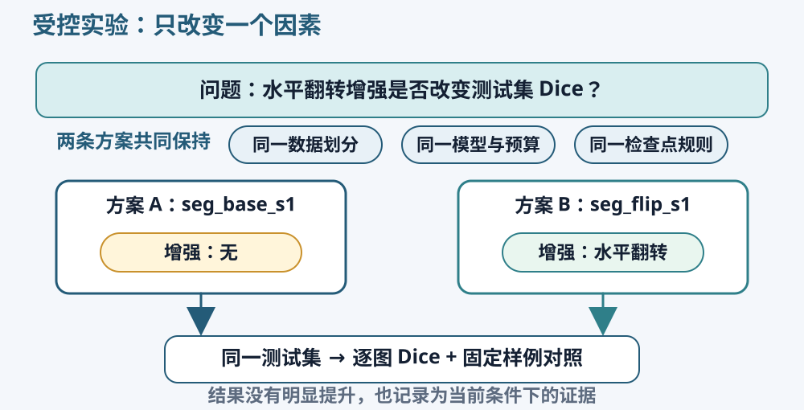
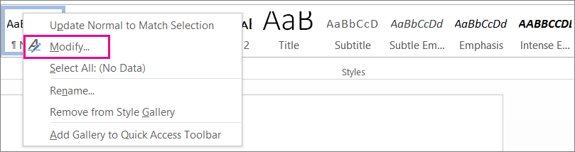
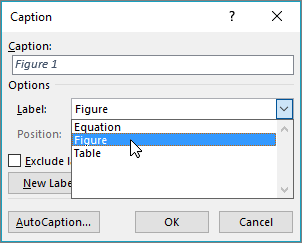
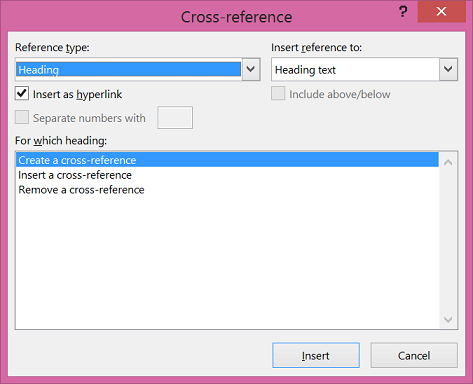
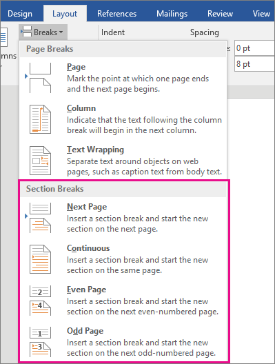
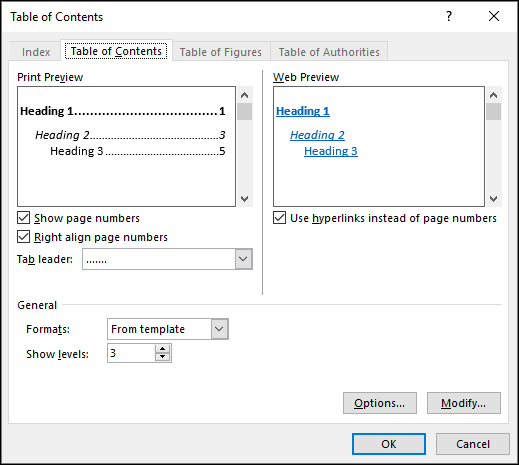
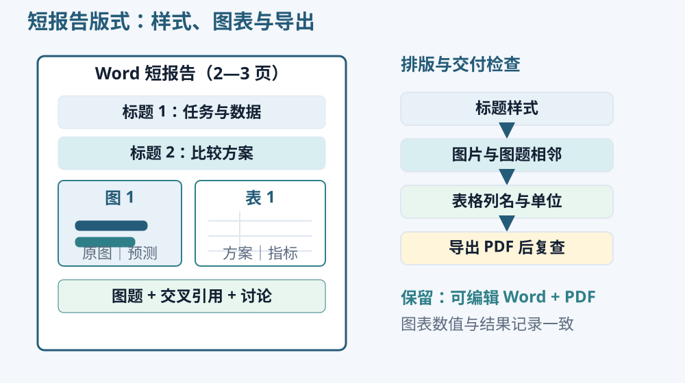

实验设计与记录
实验问题与比较条件

先写出准备改变的因素，再列出需要保持一致的条件。比较学习率时，模型、初始参数、数据划分、批量大小和训练预算应尽可能一致。比较不同模型时，至少保持数据、评价方法和训练预算的说明一致，并报告参数量或计算差异。
不要根据最终结果再改写最初的问题。结果没有明显提升也有价值：它说明在当前数据与训练条件下，这项变化尚未显示清楚优势。记录失败或不稳定的实验，可以避免以后重复投入同样的时间。
种子、划分与实验编号
随机种子影响参数初始化、样本顺序等操作。固定种子可以减少比较中的随机差异，但不会使所有硬件和算子都完全一致。保存数据文件名和配置，比仅记录一个种子更便于复查。
每次实验使用独立编号，例如 seg_base_s1 和 seg_flip_s1。记录输入尺寸、训练预算、增强、损失、优化器、学习率与种子。下一次改变设置时使用新目录，不覆盖前一次的权重和曲线。具备计算条件时，可使用几个种子重复比较；暂时只有单次结果时，直接说明运行次数。
训练曲线与检查点
训练损失下降说明模型更适合当前训练目标。验证指标反映对未参与更新的图像的表现。若训练继续改善而验证逐渐变差，可能存在过拟合，需要结合数据量、增强和模型复杂度分析。
选择最佳检查点所依据的验证指标应事先确定。例如使用验证 Dice 最高的权重，并在比较中统一这一规则。不要用测试集挑选训练轮次。展示曲线时注明横轴是训练轮次还是更新步数，并保留各次记录的原始数值。
结果比较与图表
均值、差异与样例
在固定测试集上比较两种方案，可以逐图计算 Dice，再查看同一张图上的差值。均值反映总体水平，分布和具体图像说明变化是否集中在少数困难样例。只看一个平均数容易忽略某种方案改善大目标却伤害细小结构的情况。
若运行多个随机种子，可以分别报告各次指标与均值、标准差。图像级样本数量和独立实验次数是两种不同数量，不能把许多相关像素当成大量独立重复实验。小型课程实验通常先做清楚的描述比较，不强行加入缺少前提的显著性结论。
同一样本的配对比较
下面四张图的 Dice 是人工算例，用于说明汇总方式。A、B 的每一行必须对应同一张图，才能计算配对差值。实际报告中的数值需要由自己的测试结果产生。
| 图像编号 | 方案 A | 方案 B | B − A |
|---|---|---|---|
| sample_01 | 0.61 | 0.66 | +0.05 |
| sample_02 | 0.77 | 0.75 | −0.02 |
| sample_03 | 0.52 | 0.59 | +0.07 |
| sample_04 | 0.84 | 0.83 | −0.01 |
| 均值 | 0.6850 | 0.7075 | +0.0225 |
B 的平均 Dice 增加 0.0225，即按百分数表示时增加 2.25 个百分点，但有两张图的分数下降。相对 A 均值的增幅约为 3.28%，它与“增加 2.25 个百分点”是不同表达。报告先写原始指标与差值，再结合具体图像说明哪些位置有变化，不将平均提升写成每张图都改善。
把逐图差值画成点图时，以 0 为参考线；点在上方表示 B 较高，下方表示 A 较高。对照图应包含改善、接近和退步的例子，并保留固定展示样本。这样读者既能看到总体分布，也能查看具体耳朵、毛发或背景区域。
波动与重复实验
标准差描述一组结果围绕均值的分散程度。逐图 Dice 的标准差主要体现图像难度与预测表现的差异，多次独立训练所得测试均值的标准差则描述训练重复的波动。它们来自不同层级，表格中要写清统计的是图像还是实验。
比较多个随机种子时，将同一组种子用于两种设置，逐次保留结果，并同时报告每次训练的数据划分与预算。一次训练中的上千张图并不等于上千次独立训练。若下一步需要置信区间或统计检验，还要明确抽样单位、同来源样本之间的关系，以及检验假设；当前练习先把逐图差异和重复次数交代清楚。
图表与结果说明
结果表至少写出方案、唯一改变项、训练预算、测试图像数和指标。图像对照采用相同样例与顺序；颜色表示应保持一致。若图中有忽略区，图注说明颜色含义与评价时的处理方式。
图注应让读者知道数据是什么、比较了什么、颜色或符号是什么意思。正文指出图中的具体证据，例如“方案 B 在这个耳朵区域少漏了一块”，再说明它是否在更多样例中重复出现。不要让“效果更好”成为结果部分的全部内容。
Word 图文排版实践
把分割实验整理成一份约 2—3 页的报告，可以同时练习文档结构、图表编号和排版。先准备任务与数据、比较方案、结果、讨论四部分文字，以及一张实际对照图和一张结果表。记录内容齐全以后，再处理字号、间距和分页，修改时更容易保持一致。
下面的操作使用桌面版 Word 的常见菜单名称。引用截图保留原教程界面；图下注明版本与语言，中文和英文菜单在操作说明中对应列出。视频适合观察连续操作，正文适合完成任务时逐步查找。
标题样式与导航窗格
“样式”把段落的用途和外观一起保存。给“实验方法”套用标题 1，Word 才能把它识别为一级标题；仅将几个字放大、加粗，通常仍是普通正文。这样建立的层级可以用于导航窗格、目录和统一改版。
- 新建文档，先输入报告题目和四个部分的名称。在“开始 / Home → 样式 / Styles”中，给报告题目应用“标题”，给四个部分应用“标题 1”。某部分下面确有子主题时再用“标题 2”。
- 选中普通段落，应用“正文 / Normal”。右键正文样式选择“修改 / Modify”，统一字体、字号和段后间距。例如用微软雅黑 11 磅、1.25 倍行距作为起点，再根据图片尺寸调整。
- 通过“视图 / View → 导航窗格 / Navigation Pane”查看标题。点击“结果”，检查是否能直接定位；正文如果误入导航列表，检查是否套用了标题样式。
- 修改“标题 1”的颜色或字号，观察所有同级标题一起变化。不要逐个重新设置外观，否则下次调整仍要重复操作。

就地练习： 把“比较方案”细分成“共同设置”和“改变因素”两个二级标题。观察导航中的缩进层级，再只修改一次“标题 2”样式。保存文档后重新打开，确认结构仍然存在。
图片、题注与正文引用
插入图片后，Word 需要决定它与文字的位置关系。嵌入型图片像一个较大的字符，随所在段落移动；浮动图片则具有环绕方式、锚点和位置设置。短报告先用嵌入型，通常更容易维护图与题注的顺序。
- 将光标放到介绍该图的段落后，使用“插入 → 图片”选择自己导出的分割对照图。优先插入原始图片文件，避免反复经过聊天软件压缩。
- 在图片旁的“布局选项 / Layout Options”选择“嵌入型 / In Line with Text”。进入图片的大小设置，保持纵横比，按页面正文宽度缩放。宽度不够时调整图的内部排版，不把图横向压扁。
- 选中图片，使用“引用 / References → 插入题注 / Insert Caption”。标签选择“图”，位置放在所选项目下方，填写能说明数据、方案与颜色含义的图注。
- 在正文需要提到图片的位置，使用“引用 → 交叉引用 / Cross-reference”，引用类型选“图”，插入“仅标签和编号”。之后插入新图或调整顺序，再更新域，引用编号就能一起更新。

手工输入“图 1”属于普通文字，自动题注的编号属于可更新的域。做一个小实验：先在原图之前插入一张临时图片和题注，再在正文区域按 Ctrl+A、F9 更新域，观察原图与交叉引用编号的变化。确认后删除临时图及其题注，再次更新。笔记本电脑可能需要配合 Fn 使用 F9。

上图展示同一个交叉引用对话框引用标题时的状态。引用报告中的图片时，将“引用类型 / Reference type”改为“图 / Figure”，右侧选择“仅标签和编号 / Only label and number”，再从下方列表选中自己的题注。如果列表为空，先确认图片已经通过“插入题注”建立编号。
表格、单位与有效数字
结果表的第一列写方案名称，后面放唯一改变项、样本数、Dice 和 IoU。指标计算方式写在表格旁或表注中，例如“先逐图计算，再对测试图像取均值；待定边界像素不参与评价”。数值列保留一致的小数位，不通过增加位数暗示更高的测量精度。
通过“插入 → 表格”创建表格，在“表格布局”中调整列宽与单元格对齐。段落中的空格和制表符不适合代替表格结构。长单元格可自然换行；数值列应有足够宽度，避免一个数被拆成两行。先将同一方案的图片、表格和正文名称统一，再调整边框和颜色。
如果表格跨页，选中表头行，通过“表格布局 → 重复标题行”让下一页也显示列名。在“表格属性 → 行”中检查是否允许跨页断行；一个短记录通常适合放在同一页，一整张长表则不必强行挤进一页。表格完成后，用自动题注添加“表”编号。
段落分页与分节
在“开始”中显示段落标记 ¶，可以看到回车、分页符等隐藏格式。连续敲很多次回车只能把后面的内容暂时推下去，一旦前文增加一句话，空白和分页就可能改变。
想让一个新部分从下一页开始时，使用 Ctrl+Enter 插入分页符。想让短标题跟随后面的正文时，在“段落 → 换行和分页”中启用“与下段同页 / Keep with next”。图片所在段落也可以与下一段题注保持同页；随后检查是否出现过大的空白，必要时缩小图片或改变图的位置。

分页符只安排新页；分节符还允许前后部分使用不同的页面设置。长报告若需要某一页横向放置宽表，可以在它前后插入“布局 → 分隔符 → 下一页分节符”，再仅改变当前节的纸张方向。修改页眉或页码时，注意“链接到前一节”的状态。两三页的分割短报告通常用不到复杂分节，可以在另一份练习文档里尝试，观察差别后再决定是否使用。
自动目录与 PDF 导出
报告扩展到更多页面后，可以在正文前通过“引用 → 目录 / Table of Contents”插入自动目录。它读取已经设置的标题样式。新增标题或更换页面位置后，右键目录选择“更新域”，需要更新标题文字时选择“更新整个目录”。本次短报告可以直接使用导航窗格，无须额外占一页放目录。

保存可编辑 DOCX，再通过“文件 → 导出”或“另存为”生成 PDF。导出后重新打开 PDF，重点检查图中文字能否读清、题注是否跟随图片、表格是否断裂、引用编号是否一致。Word 中正常显示的内容，仍应在最终阅读文件里核对一次。
本次实践产物： 一份含实际分割结果的 DOCX 和 PDF。正文具有标题样式，至少一张图具有自动题注和正文交叉引用，结果表列名与单位完整。用这些功能把自己的实验说明清楚即可，排版功能应服务于阅读。

独立项目：宠物分割
自行建立 PyTorch 分割程序，使用 Oxford-IIIT Pet 的图像和 trimap。保留官方测试部分，从 trainval 中固定训练与验证划分；正确映射前景、背景与忽略区，图像和掩膜执行同步空间变换。选择一个可以生成像素预测的网络，自行组织训练、验证、检查点保存与测试。
完成一次受控比较，明确一个改变因素，并使用同一测试集合比较逐图 Dice、IoU 与固定样例。保留原图、标注和预测的并排图，至少讨论一个漏分或误分区域。数据子集、训练次数和计算限制写入报告的实验条件。
提交可重新运行的代码或 Notebook、配置与划分、权重、逐图指标、固定对照图，以及 Word/PDF 简短报告。报告必须使用实际结果；图像、表格和正文中的方案名称保持一致。你在猫狗阶段学到的尺寸、对齐和导出操作，可以继续用于制作清楚的结果图。